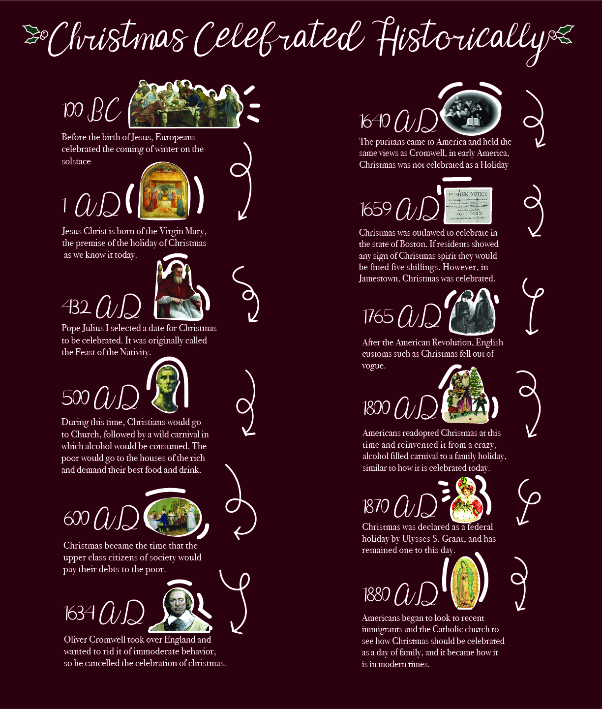
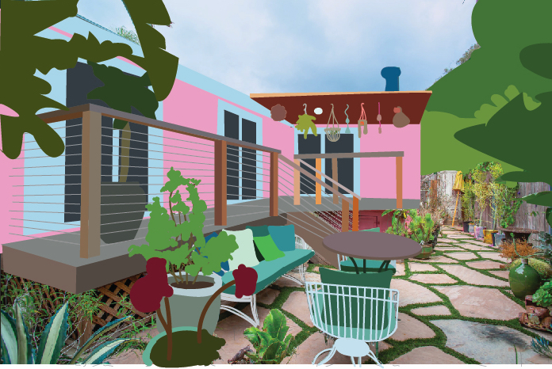
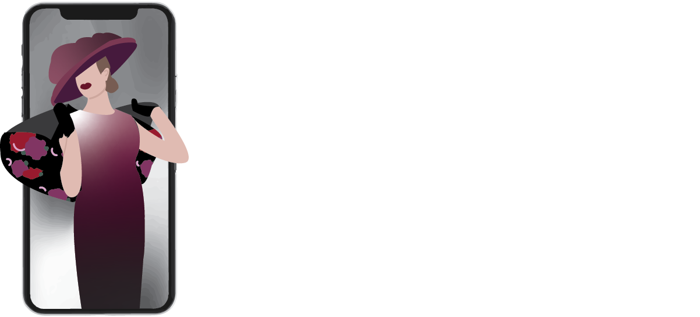
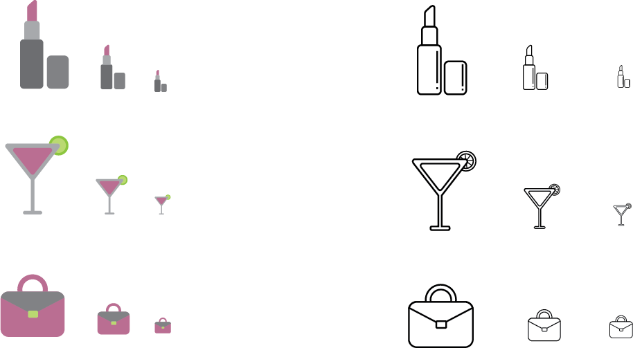

December, 2019
Project 4: Infographic

I created an infographic of how Christmas has been celebrated historically. Christmas is very important to me because I'm a catholic and this time of year inspired me to create this project. I learned a lot about the history so it was very fun to do. I took a whimsical approach to my infographic, mixing hand drawn symbols, typography and historical imagery.
October, 2019
Project 3: Article Illustration
Betsey Johnson’s Colorful Malibu Mobile Home is for Sale for $1.95 Million

Modern Designer is Bringing Back 1950's Fashion

Best Perfumes to Purchase for the 2019 Holiday Season
For this project I decided to follow a theme of popular culture. In my first image, I illustrated the house of fashion designer, Betsy Johnson, which she has up for sale in malibu. I was intrigued by the home and how unique it looked. In my second image, I illustrated an article of a fashion designer who was bringing back 50's fashion, I attempted to make a fresh mix of both time periods by involving the fashion as well as a modern day object such as the iphone. For my third image, I would like to get into advertising so I wanted to experiment with a consumerism concept. I illustrated a bottle of perfume as well as accessories with it to demonstrate the scent and so the viewer can visualize how it will be when they purchase it. I wanted to also play with freeform gradients and glass illustration, the last image was very much new territory for me, I look forward to working more with freeform gradients in the future.
September, 2019
Project 2: Icons

I created icons of things that I enjoy. Throughout all three images, I used a consistent color scheme that could work for all of the objects in order to make them aesthetically cohesive. The items includ a lipstick, a cosmopolitan as well as a purse. I went for a graphic style because I wanted to emulate glamour and posh.
August, 2019
Project 1: Avatar

In this project I created an avatar based on myself, I enjoy the color pink as well as handbags so naturally I gave my avatar such items.